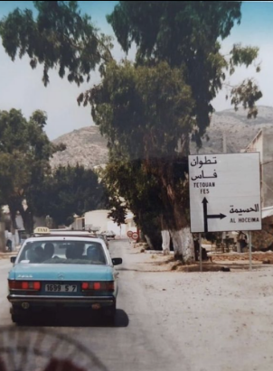

De lange nacht

Ergens in een tsarenrijk, in een ver land, woonden eens een tsaar en zijn tsarina. Ze hadden drie zoons die zo dapper waren dat het met geen pen te beschrijven en in geen sprookje na te vertellen is. De jongste heette Ivan.
Toen de zoons oud genoeg waren, riep de tsaar ze bij zich en zei: “Jongens, het is de hoogste tijd dat jullie eens gaan trouwen. Pak allemaal een pijl, ga naar buiten, span je zware boog en schiet je pijl af, elk in een andere richting. Waar je pijl terecht komt, daar moet je je vrouw zoeken.”
En de pijl van de oudste zoon kwam op het erf van een bojaar terecht en de dochter van de bojaar raapte de pijl op en gaf hem aan de tsarenzoon. En de pijl van de middelste zoon kwam op het erf van een koopman terecht en de dochter van de koopman raapte de pijl op en gaf hem aan de tsarenzoon. En toen schoot de jongste broer zijn pijl af, maar niemand kon zien waar die pijl terecht gekomen was. Het ding leek spoorloos verdwenen. Ivan ging op zoek en hij kwam bij een modderig moeras en daar zag hij een kikker op een modderbergje zitten, die zijn pijl vasthield.
En Ivan ging terug naar zijn vader en zei: “Wat moet ik nu doen? Ik kan toch niet trouwen met een kikker? Dat wordt nooit wat, in geen honderd jaar! Die kikker en ik zijn veel te verschillend”